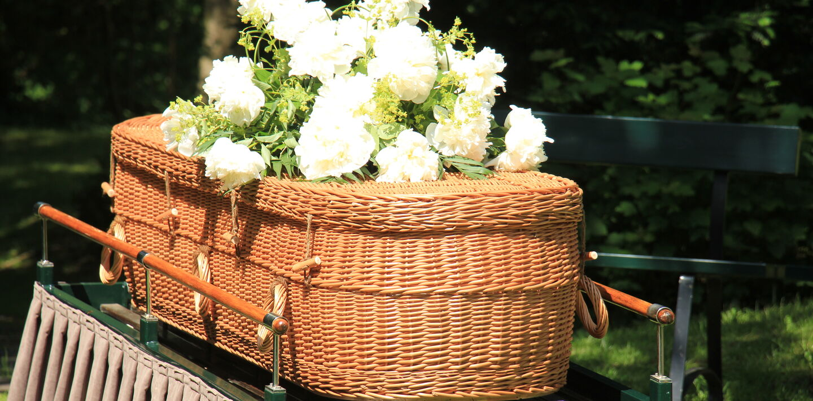
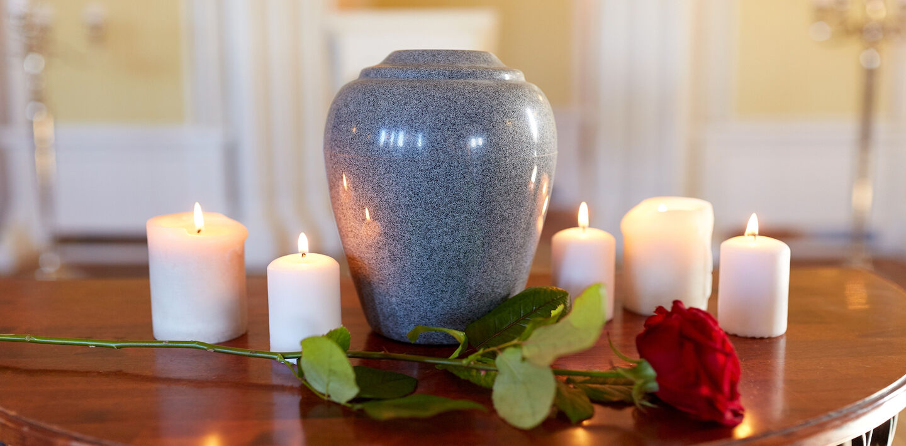
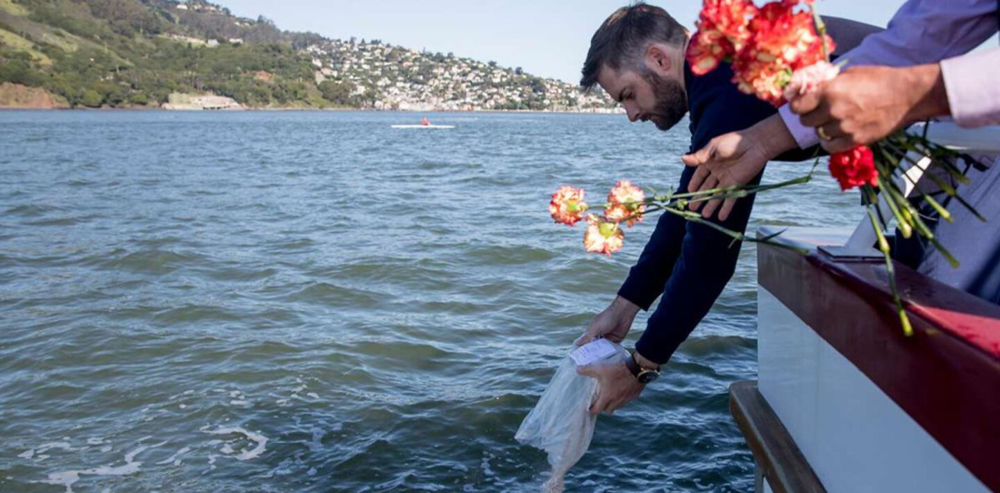
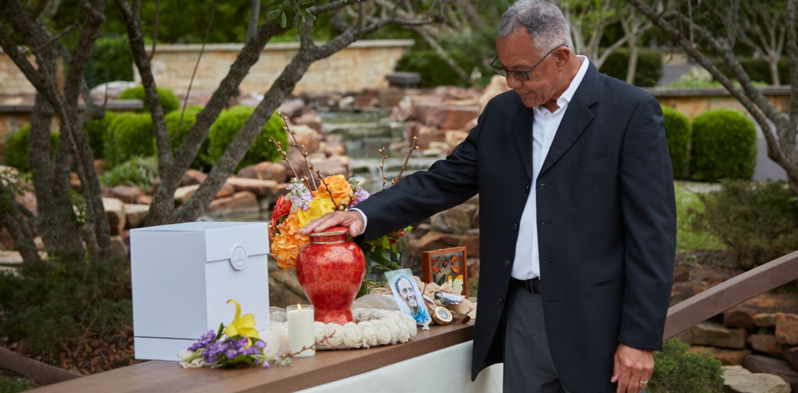

Get your free pricing guide
Our Guide to Understanding Funeral & Cremation Costs helps you decode the sometimes confusing costs of final arrangements.
Both Americans and Canadians are choosing cremation more and more. They do so for various reasons. Among them is cost. In 2024, the median cost for a cremation with a viewing and a funeral or memorial in the United States, including the cremation casket and urn, is around $6,280, according to the National Funeral Directors Association. Many factors affect cost.
Our Guide to Understanding Funeral & Cremation Costs helps you decode the sometimes confusing costs of final arrangements.
In this article you will learn:
Though cremation is relatively straightforward, a number of factors contribute to the cost. You can elect to hold a viewing before the cremation, which will usually involve embalming and a casket. Or you can skip the viewing but host a celebration of life after cremation. Some families choose to do both.
Ashes may be memorialized at a cemetery or scattered in a place that was personally meaningful to the loved one. Many people opt to keep their loved one's ashes at home. Each choice impacts the overall cost. Prepaid cremation can help guard against future price increases.
Many factors determine the price of a cremation, including:
When you're shopping for a cremation provider, use this list of questions to get a good idea of how a cremation provider operates. Keep it handy and take notes as you make calls.
In 2023, according to the National Funeral Directors Association, the national median cost breakdown for a cremation with a viewing before and memorial service or celebration of life afterward was as follows:
*Costs will vary by region and provider.
The casket is often one of the more expensive aspects of a funeral with a burial. Caskets can range from about $2,000 to up to $20,000 or much more.**
Though a casket is not required for cremation, many state laws require an “alternative container.”
Also known as cremation containers or cremation caskets, alternative containers are simpler than traditional burial caskets. They are usually made of cardboard, wood or fiberboard, without any metal parts. Their purpose is to securely hold a loved one before and during the cremation process , including on the way from the funeral home to the crematorium.
State laws require cremation containers to protect the deceased and those responsible for transporting them from funeral homes to crematories. Having a loved one in a container makes it easier to move the loved one from place to place, including into the cremation chamber.
The Federal Trade Commission's Funeral Rule requires any funeral home that provides cremations to offer families at least one alternative container. Most crematories also require some kind of container for a loved one being cremated.
What if someone chooses to have a viewing or funeral before a cremation?
A casket may be needed for a loved one who will be cremated after a service. Some religions or cultures ask that a loved one's body be present at the service. For example, the Catholic Church prefers the deceased to be present in a casket for the funeral liturgy. The presence of the loved one at the service may also offer a family a sense of comfort, particularly if it's the family's first experience with someone choosing cremation. Being present at the service may also have been the personal preference of the loved one being honored.
Additionally, guests who attend a viewing or funeral may expect to see a casket rather than a simple container. Even when not required, some families may choose to buy or rent a casket for a cremation service.
Rental caskets, also known as ceremonial caskets, combine the look of a traditional casket with the functionality of a simple cremation container. A wooden or metal casket exterior houses a cardboard alternative container , which can be removed after the service. This choice makes a nice presentation and keeps costs down. A rental casket can be as little as half the price of even an inexpensive casket.
Alternative containers can be simple cardboard or plywood/laminate boxes, though many families choose to honor their loved ones with a solid wood cremation casket.
The simplest cardboard options cost about $175, while solid wood cremation caskets may cost up to $500.** Containers come in various colors, finishes and materials, from cardboard to wicker to wood.
While budget is one factor, the choice often reflects other considerations. One family might choose a solid wood casket with a crepe lining and pillow to provide a sense of comfort when viewing their loved one before cremation. Another family may choose an elegant wicker basket to give their loved one an earthier farewell. Or a family might select a simple plywood container and then personalize it with art and messages.
The types of containers for ashes are as varied as the options for what to do with ashes, and they range in cost from free to thousands of dollars.**
Your plans for your loved one's ashes dictate this choice. To give Grandmother a permanent resting place in a mausoleum niche, you may want to purchase a pretty urn. To host a scattering service for Dad at his favorite fishing hole, you may want to receive his ashes in a scattering urn or a simple container. Containers for ashes range from biodegradable tubes to hand-carved wooden boxes to decorative ceramic, porcelain or metal urns.
Here are some of the most common types of containers for ashes.
Crematories provide funeral homes with ashes encased in rigid plastic or cardboard containers. If a family doesn't purchase an urn, that temporary container may be included in the cost of cremation services or provided at a nominal charge.**
Every family who entrusts us with their loved one's cremation can choose a basic container. It comes in a care package that includes a handwritten note from a funeral director, an informational booklet titled “Caring for Yourself and Your Loved One” and a Remembrance Day packet designed to help the family honor their loved one on the one-year anniversary of their passing.
A scattering urn is a temporary container specially designed to help scatter a loved one's ashes during a scattering ceremony, often in a meaningful location such as a garden, ocean or forest. The design usually incorporates a secure lid, so ashes don't spill during transport, and a spout to make them easier to spread evenly and gently.
Scattering urns can be personalized to reflect the loved one's personality and preferences, thereby providing a deeply personal touch to the act of saying a final goodbye. Depending on the material and other features, these may cost between $50 and a few hundred dollars.**
Traditional cremation urns are usually crafted from materials such as metal, ceramic, wood or glass. A standard cremation urn is roughly comparable to a large vase or a small kitchen appliance, like a blender. Both functional and aesthetically pleasing, they often feature intricate designs and engravings. Families choose decorative full-size urns when they want to keep a loved one's ashes at home or place them in a glass-front mausoleum niche. Though a decorative urn may also be placed in a columbarium or buried in the ground, families often choose urns with simpler designs for those types of memorials. Full-size urns generally cost in the hundreds of dollars.**
Like full-size urns, keepsake urns are smaller counterparts that allow multiple family members to divide a loved one's ashes. Like full-size urns, keepsake urns are often made of metal, stone or wood and come in a wide range of designs, such as a heart, bird, acorn or even a stained-glass lamp. If you wish, a keepsake urn may be personalized with engravings to reflect your loved one's unique style and memory.
Also known as flameless cremation or alkaline hydrolysis, water cremation uses warm water, alkaline chemicals, heat and gentle agitation to speed up the natural process that takes place after burial. The bone fragments that remain are then carefully processed into ashes that are similar to those produced by traditional cremation. Some people feel that water cremation is a gentler process than flame-based cremation.
A water cremation without a service costs between $2,000 and $4,000.**
No container is used during water cremation, but if there's a service beforehand, a casket or container may be needed. Families receive back ashes, and so they may choose an urn of some kind.
The least expensive cremation option is simple cremation, sometimes known as direct cremation. A simple cremation typically costs $700 to $5,000.** It does not include a viewing or memorial service.
People choose this option for themselves or their loved ones to keep costs at a minimum. And though it's sometimes called cremation without a ceremony, that doesn't have to be the case. If you choose simple cremation, you can still host an informal gathering at home or at a scattering site without adding to the cost. What matters is being with friends and family to remember, reflect and heal.
There are many reasons people choose cremation either for themselves or their loved ones. These reasons range from religious considerations to personal preferences.
Here are some of the more common reasons families choose cremation:
Flexible memorial options: Cremation allows for flexibility that traditional burial does not. When you choose cremation, you have as much time as you need to plan a funeral, memorial or celebration of life. You can hold a viewing for nearby family and friends before the cremation and then host a larger memorial or scattering service weeks or months later for friends and family who need to make travel plans and take off work. That's especially beneficial for those who live in different parts of the country or world. Cremation also enables families to focus on the immediacy of their grief and decide on the details of a service when they feel ready.
Customization: Cremation allows for nearly endless customization and creativity. Families have many special options for memorializing a loved one. Cremated remains can be placed in an ocean reef or incorporated into jewelry or art. They can be pressed into vinyl records, made into fireworks, placed in a mausoleum niche, scattered from a mountaintop and even launched into space. The options are endless and can be as unique as the life being honored.
Lower cost: Cremation can cost less than traditional burial. A simple cremation is the least expensive type of cremation and can cost thousands less than a traditional burial with a funeral. A cremation with a service can also cost, as you can opt out of a casket or cemetery plot, for instance.
No religious affiliation: More Americans than ever claim to have no affiliation with a particular religion. Since many funeral and burial traditions are rooted in religious beliefs, many people are choosing cremation as a way to create a new tradition.
We know that planning a cremation isn't something families do every day. It's important to understand that not all providers are the same, and there are many things that set us apart, including:
Concierge Delivery™: If you wish, a trusted member of our staff will hand-deliver your loved one after the cremation to your home, clergy or cemetery.
Signature Dedication™: In keeping with our pledge to treat every family with respect, we provide a special moment before you take your loved one home.
Scattering assistance: We offer guidance on scattering ashes over land and sea and can also provide tips for a scattering ceremony.
Celebration of life planning: When you choose to hold a celebration of life at one of our funeral homes or celebration of life centers, planning services are part of the package.
The Cremation Association of North America projects that by 2028, 67% of Americans will choose cremation, compared to 33% burial. These numbers are up from a little more than a decade ago, when approximately 45% chose cremation. Numbers are even higher in Canada, where the cremation rate was 75% in 2023. U.S. cremation rates vary by region, from around 33% in Mississippi to more than 83% in Nevada.
**Prices and selections outlined in this story will vary by Dignity Memorial provider.
There are hundreds of decisions that must be made when planning a funeral, cremation or memorial service, and making funeral arrangements can often seem confusing or overwhelming. Because there's no one-size-fits-all approach to planning a funeral or memorial service, there are different costs and expenses to consider. Learn what to expect and get your free Guide to Understanding Funeral and Cremation Costs today.
* indicates a required field
We will never sell your information or use it for any purpose except official Dignity Memorial correspondence. See our privacy policy.